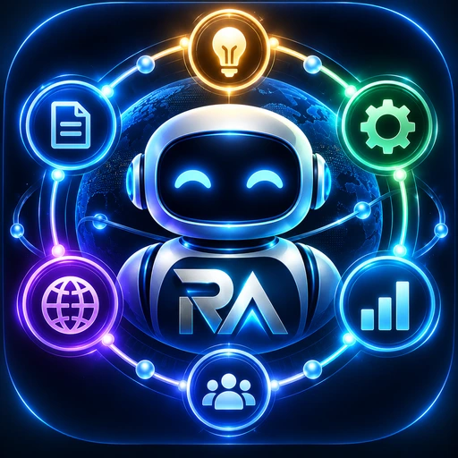
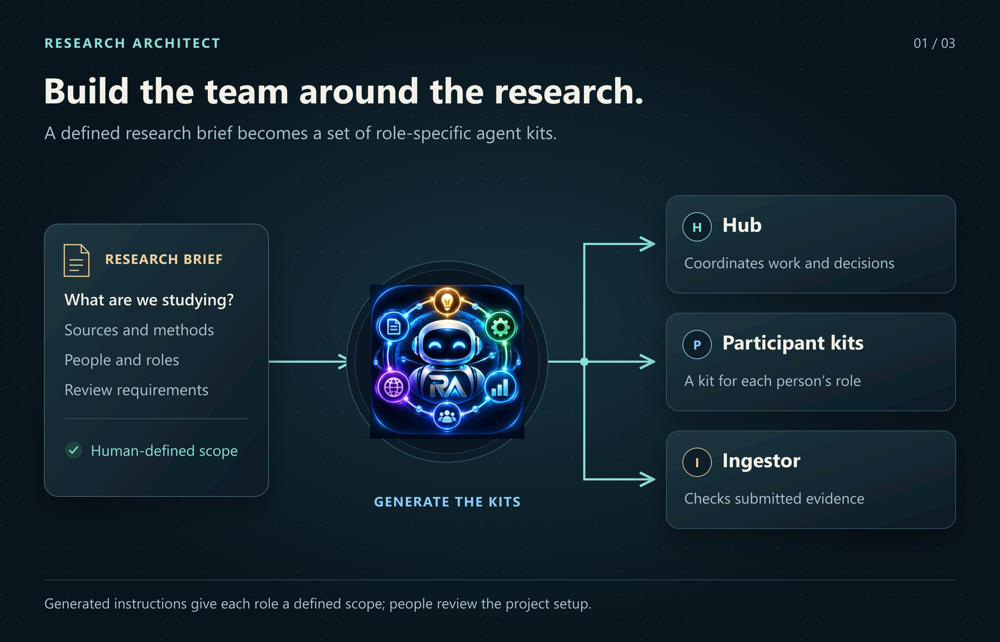
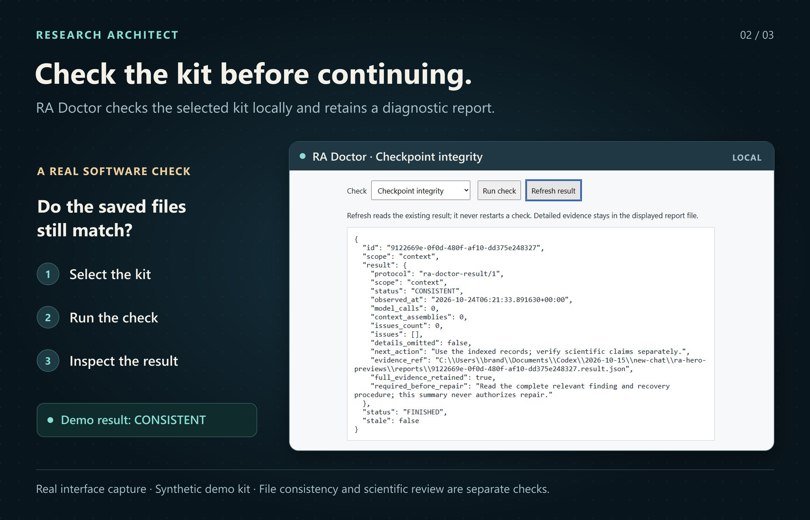
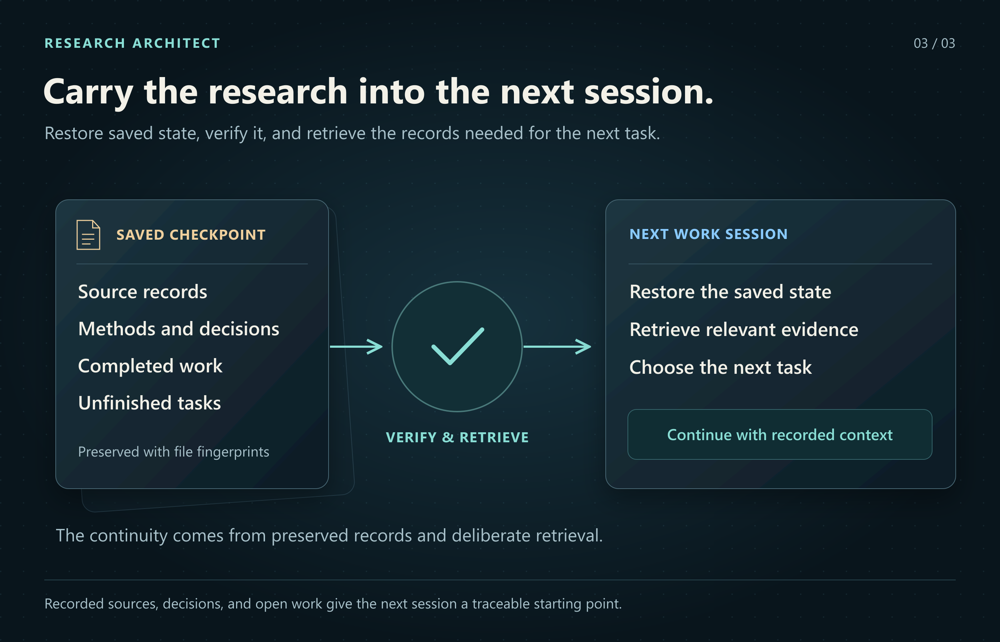
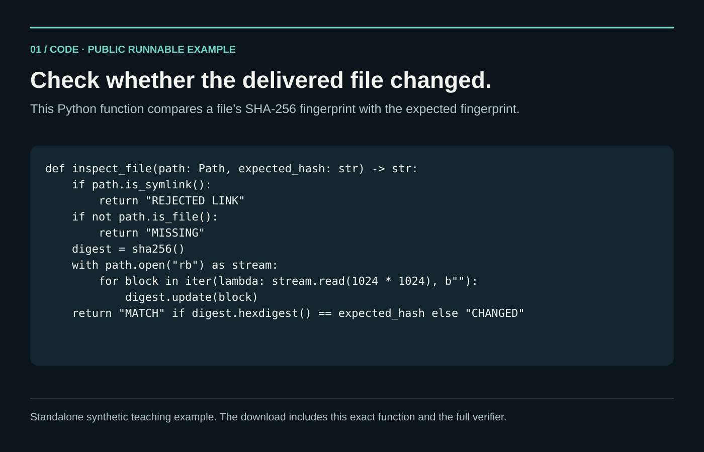
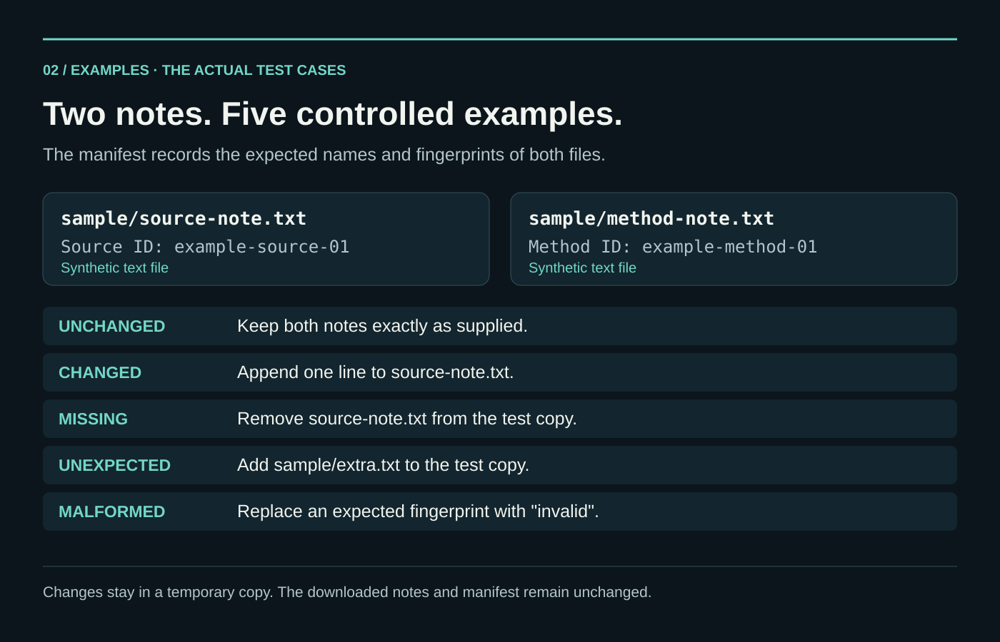
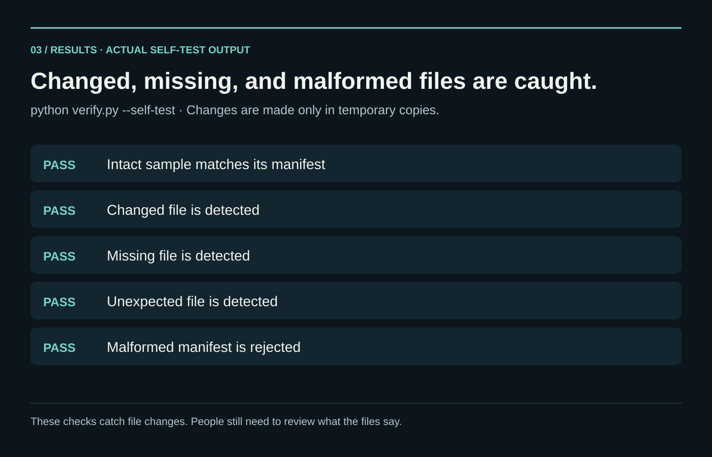

Shared team plan
Research purpose, questions, responsibilities, and setup checklist in a five-page example.
Open team plan · PDF ↗
02 / Research software frameworkI built Research Architect to help a research team keep its individual AI assistants working from the same agreed plan. It creates a kit of instructions, reference material, and working tools for each participant’s assistant. Each kit defines the job and how work should be checked and shared. The team approves the written plans before kit creation, and saved records preserve its sources, decisions, and unfinished work.
Created by Brandon Santor under PhalAInx, my independent software studio.
Project at a glance ↓


I built Research Architect for human teams whose members work with their own AI assistants. A research plan can otherwise become scattered across separate conversations: one person knows why a method was rejected, another has a corrected source, and a new session starts without either. RA gives the team a recorded plan, defined responsibilities, and a way to preserve and review the work they exchange.
I built the Python generator that creates the kits, the tools that save setup decisions and produce written plans, and the checks that detect changed files. I also built ways to retrieve shared sources and recover work after interruptions. I used RA to establish the New World Screwworm research coordination system and helped eight people join it. The Spatial Evidence Workbench is my separate mapping and evidence-review application.
The coordinator’s kit, called the Hub, manages assignments, decisions, and the shared Library. Each participant receives a Spoke kit with their role, methods, first task, and the work they depend on. A separate checking role, the Ingestor, examines submissions and repeats agreed steps when needed. People review the work before the Hub publishes accepted material to the Library. Other roles can read approved material and propose changes.
I built a check that ties approval to the actual documents the project lead reviewed. RA produces a team plan and a coordinator plan and records that decision. If either plan changes or approval is withdrawn, kit creation stops until the current documents are approved. The kits receive the same files that were reviewed.
I built saved checkpoints: records of the project’s sources, methods, decisions, and unfinished work at a particular time. The tools find the latest checkpoint, check its files, and retrieve the records needed for the next task. RA Doctor provides a local interface for checking a kit and saving the results without calling an AI model.
After an interruption, the records distinguish finished work from failed tasks and outcomes that remain unknown. Version checks and recovery copies help prevent an update from losing earlier work. The original evidence, corrections, and decisions about closing a task remain available for review.
I reviewed thousands of research and technical sources and translated research expectations into instructions and working tools: cite the evidence, compare methods, retain conflicting findings, document uncertainty, and keep people responsible for decisions. The scientific library provides method guides, source records, and complete examples using invented data. Relevant source material can be retrieved in full when the task needs it.
The illustrated white paper explains the design, the research behind it, and its use in the New World Screwworm project. It includes references and records of the engineering checks.
A new participant and their assistant must learn the project’s terminology, prior decisions, evidence, dependencies, and unfinished work. A generated kit and Library access provide records to learn from; they do not transfer the existing team’s understanding automatically. If the project changes faster than a newcomer can catch up, onboarding can consume the lead’s and team’s time instead of adding useful capacity.
The tools preserve and check recorded evidence. They cannot prove that a person read a PDF, that an assistant understood a source, or that a scientific conclusion is correct. People remain responsible for those judgments.
Research Architect is developed under PhalAInx, my independent software studio. High Command is the separate application for one person coordinating multiple models and projects.
I designed setup so the team can read and review how the project will work. It saves answers and unfinished decisions between sessions, then produces a shared team plan and a more detailed coordinator plan.
Research purpose, questions, responsibilities, and setup checklist in a five-page example.
Open team plan · PDF ↗The shared design plus records and setup details for the coordinator in a ten-page example.
Open Hub plan · PDF ↗These draft plans use an invented project and include unanswered setup questions. They show what RA produces before a real team approves its plans.
I tested whether the kit builder uses the approved documents and stops when they change. These checks show that approval of the current plans is required before kit creation.
Current package: factory 2.6.1 preview, distribution revision 1; operational runtime 2.4.0; scientific library 1.9.
The delivery record reports eleven groups of tests covering the path from plan review to kit creation, plus five checks of refused and renewed approval. A four-role build copied the approved PDFs even when PDF generation was disabled, showing that it delivered the existing files. Changing a PDF stopped publication. These tests used simulated approval responses. Earlier PDF-generation, runtime, scientific, and AI-conversation test suites were not rerun for this update.
Before RA creates the team’s assistant kits, the project lead must approve the written plans. If those plans change or approval is withdrawn, kit creation stops until the current documents are approved. Each kit receives the appropriate approved documents. Existing teams and their past decisions remain unchanged. Read the supplied release notes ↗
A new conversation or participant still needs help getting started. In earlier trials, assistants sometimes missed a required startup file before finding it by searching the folder. Checking plan approval does not establish that an assistant understands the project or makes better research judgments.
How can a reviewer tell whether the files they received match the expected copies? This small Python example checks two invented research notes against a manifest, a list of expected filenames and digital fingerprints calculated with SHA-256. It demonstrates how changed, missing, and unexpected files are detected.
I created this standalone example so visitors can see and run the method. It is separate from RA’s working software. A match means the file contents agree with the supplied fingerprints; it does not establish who wrote the files, whether their claims are correct, or whether anyone approved them.

The exact Python function included in the download, with the full verifier available above.

Five cases exercise the two sample notes and manifest. Each change uses a temporary copy.

All five checks passed when the downloadable example ran. The results are typeset for readability.
Read the captured output ↗handoff-integrity folder. Python 3.10 or newer is the only requirement.python verify.py. The intact example reports that both files match the manifest.python verify.py --self-test. Five checks exercise intact, changed, missing, unexpected, and malformed inputs using temporary copies.This is the same function included in the download. The full script also checks the manifest structure and expected file list.
def inspect_file(path: Path, expected_hash: str) -> str:
if path.is_symlink():
return "REJECTED LINK"
if not path.is_file():
return "MISSING"
digest = sha256()
with path.open("rb") as stream:
for block in iter(lambda: stream.read(1024 * 1024), b""):
digest.update(block)
return "MATCH" if digest.hexdigest() == expected_hash else "CHANGED"Keep an expected manifest from a trusted handoff. Replacing both a file and its manifest can produce a new matching pair. Read the scope and instructions ↗
Explore each stage of the work.
Record what the study asks, what evidence it needs, what it will produce, and who will review the work.
Configure each participant’s AI assistant with its research role, methods, source context, dependencies, and handoff responsibilities.
Compare findings with their sources, keep conflicting evidence visible, identify gaps, and have people review the conclusions.
Load the current saved project state, check the expected files and their SHA-256 fingerprints, publish the reviewed update, and keep a recovery copy.